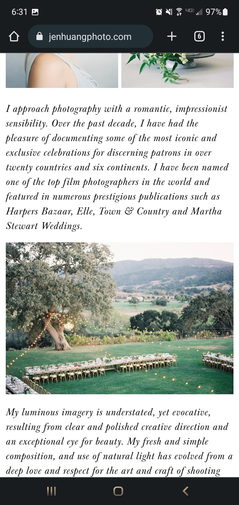

Zillow
zillow.comProximity creates less clutter and gives structure to the information that is displayed on a page. This makes information easier to read and typically easier to remember. Zillow has a lot of white space on their homepage. The white space is organized in such a way that there are clumps of information. You have the search option right at the front that looks separated from other things. Below that you have a sign in option with images near it, another cluster. Below that you have multiple clusters that serve different purposes. It is easy to read and understand what is where.
Jen Huang Photo
jenhuangphoto.com The rule of thirds is a rule for composing visual images. This can be applied to photos as well as layout and design of a website. Jen Huang has set up the website in a similar way. There are 3 paragraphs on the front page as well as several photos that apply this rule with the photos being taken with thirds in mind. The use of threes makes the page appealing and draws the attention of the viewer.
Interaction Design Foundation
interaction-design.orgVisual hierarchy consists of arranging elements to show importance. The elements are laid out strategically and logically to guide users to desired locations. Interaction Design Foundation starts with a button to learn UX design. Clearly this shows the most important option here, especially with the main header always changing what it is saying. The use of large font sizes for the main headers of each section and smaller font sizes for information about that subject. This allows for easier navigation of information and desired options.